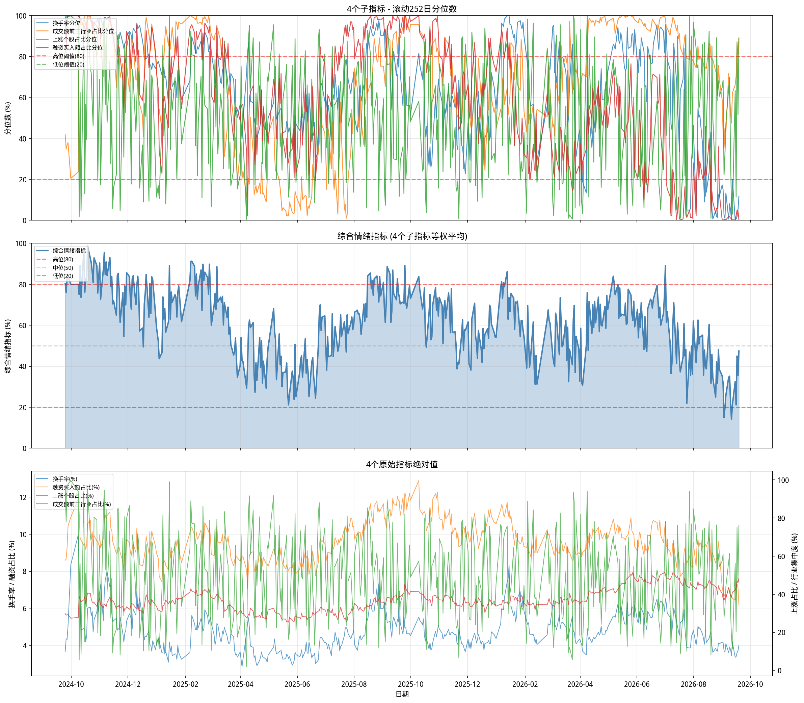

数据管线尚未产出该市场的结果文件。运行对应的抓取与计算脚本后重新生成本页即可。 此处不会显示任何占位或估算数值。
情绪读数多周期看板 T=2026-09-18 (最新)
支持下拉选定历史日期、左右快捷切换，或直接在下方图表/表格上点击任意时点
情绪指标交互式全景走势 (2024.09.24 - 至今)
💡 提示：在图表任意点上鼠标点击，上方看板将同步切换至该日数据！支持滚轮缩放与滑块拖拽
四大子指标滚动252日分位数走势 (0~100%)
综合情绪指标历史走势 (等权合成)
原始指标绝对值走势 (双Y轴: 换手/融资 (%) vs 上涨/集中度 (%))
四大微观情绪子指标
基于 万得全A (881001.WI) 核心日频交易数据，从“交易活跃度、资金抱团集中度、赚钱效应广度、杠杆做多情绪”四个独立维度综合衡量市场水温：
| # | 子指标 | 通俗定义与计算口径 | 市场微观含义 |
|---|---|---|---|
| 1 | 换手率 | 当日全市场成交额 / 自由流通市值 | 衡量交投活跃度与筹码换手意愿 |
| 2 | 前3行业占比 | 成交额最大的前3个行业合计 / 全市场成交额 | 衡量主线资金抱团集中度与分化程度 |
| 3 | 上涨个股占比 | 当日上涨股票数量 / 全市场交易股票总数 | 衡量市场广度与散户普遍赚钱效应 |
| 4 | 融资买入占比 | 两市融资买入总金额 / 全市场总成交额 | 衡量高风险偏好杠杆资金的主动进攻情绪 |
算法逻辑与通俗公式
📌 通俗含义：若今日某子指标的分位数为 85%，代表该维度比过去一年 85% 的交易日都要高；0% 表示过去一年最低，100% 表示过去一年最高。
📌 通俗含义：四大维度各占 25% 权重 简单平均，消除单项指标的短期噪点。（若遇融资数据尚未发布，自动对剩余 3 个有效指标取均值）。
validate_signal.py。本页不构成投资建议。
静态研报图表存档 (High-Resolution Output)
由 Python 自动化任务生成的高清图表输出，展示 2024 年 9 月 24 日至今历史全貌：

近15个交易日详细数据明细
💡 提示：点击表格中任意一行，上方看板将直接载入并显示该日读数！
| 交易日期 | 换手率 (%) | 换手率分位 | 前3行业占比 (%) | 行业集中分位 | 上涨个股占比 (%) | 上涨分位 | 融资买入占比 (%) | 融资分位 | 综合情绪指标 |
|---|
数据源 Spot Check 历史交叉比对报告
✓ 校验通过 (一致性 99.99%)为摆脱对特定客户端终端的单一依赖，系统引入了公开金融数据源自动校验机制。对历史 3,374 个交易日 的官方交易所融资融券数据与历史导出数据进行了逐日逐笔 Spot Check 交叉比对：